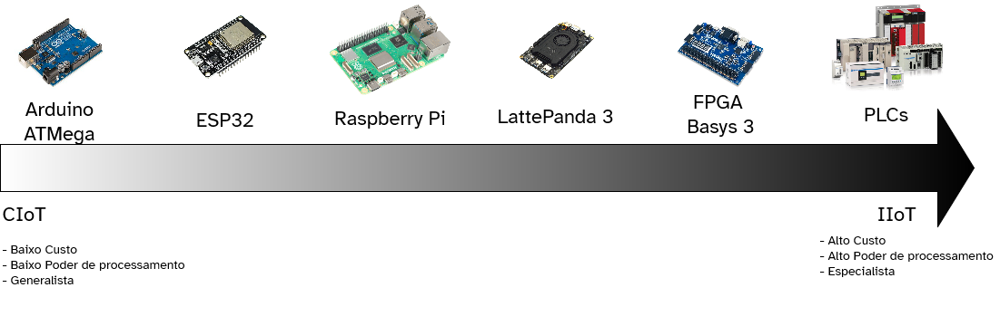

Definições de IoT
A Internet das Coisas (IoT) é uma área em plena expansão, impulsionada principalmente pelos avanços na miniaturização de sensores, controladores e tecnologias de comunicação sem fio. A integração entre dispositivos físicos e sistemas digitais possibilita a coleta, o processamento e o compartilhamento contínuo de dados em tempo real.
Nosso estudo sobre tecnologias IoT irá abranger desde o projeto de circuitos e sistemas embarcados até a transmissão de dados em rede e sua integração com modelos de inteligência artificial, permitindo compreender o ciclo completo — da captação à análise inteligente da informação.
O que é IoT?
Minha definição:
IoT pode ser entendida como a interconexão de “coisas” — equipamentos, objetos ou sistemas — que incorporam sensores, controladores e atuadores conectados à Internet, possibilitando comunicação e automação inteligentes.
Sensores sentem o ambiente
Os sensores são os seus “sentidos”. Eles são os componentes fundamentais que permitem a um dispositivo perceber o mundo físico ao seu redor, convertendo estímulos como luz, som, movimento e temperatura em sinais elétricos que o controlador pode interpretar. A capacidade de coletar dados do ambiente é o que torna a IoT tão poderosa, permitindo desde a automação residencial até o monitoramento industrial complexo.
A imagem abaixo mostra uma vasta gama de sensores, cada um especializado em detectar um tipo específico de fenômeno físico.

Atuadores Inteferem no ambiente
Enquanto os sensores permitem que os sistemas de IoT “sintam” o mundo, os atuadores são os componentes que lhes permitem “agir”. Eles são a contraparte dos sensores: recebem um comando elétrico e o convertem em uma ação física no mundo real. Seja movendo, aquecendo, iluminando ou emitindo som, os atuadores fecham o ciclo da automação, transformando dados e decisões digitais em interações tangíveis.

Controladores tomam decisões
Por fim no coração de todo dispositivo de Internet das Coisas (IoT) existe um controlador, o componente responsável pelo processamento, controle e comunicação. A seleção de uma categoria de controlador é uma decisão de engenharia crítica, ditada pelas necessidades da aplicação. Conforme ilustrado na figura abaixo que vai da IoT de Consumo (CIoT) para a IoT Industrial (IIoT), os controladores variam drasticamente em custo, poder de processamento e nível de especialização.

1. Microcontroladores (MCUs)
Representando a base da IoT, os microcontroladores são circuítos integrados que reunem processador, memória e entrada e saida (I/O) em um único chip, projetados para executar tarefas específicas em sistemas embarcados. Eles executam um programa único (firmware) em um loop contínuo, sem um sistema operacional complexo.
Tem como caracteristicas o controle em tempo real, baixo consumo de energia e acesso direto ao hardware. São ideais para ler dados de sensores, controlar motores, gerenciar LEDs e comunicar-se através de protocolos de baixa velocidade (como I2C, SPI, UART). Modelos mais avançados integram nativamente módulos de conectividade sem fio (Wi-Fi, Bluetooth), tornando-os soluções completas para nós de IoT.
Por seu baixo custo, simplicidade e eficiência energética, os MCUs são a escolha predominante para dispositivos de ponta na IoT de Consumo, como wearables, sensores domésticos inteligentes e eletrônicos de baixo custo.
- Exemplos: Arduino Uno, ESP32
2. Computadores de Placa Única (SBCs)
Os SBCs representam um aumento significativo no poder de processamento e na flexibilidade, atuando como um intermediário entre dispositivos simples e sistemas industriais complexos. São computadores totalmente funcionais construídos em uma única placa de circuito. Diferente dos MCUs, eles possuem processadores muito mais potentes (baseados em arquiteturas como ARM ou x86), mais memória RAM e a capacidade de executar sistemas operacionais completos, como Linux.
A presença de um sistema operacional permite multitarefa, gerenciamento de rede avançado e a execução de softwares complexos. Eles podem processar dados localmente (edge computing), hospedar servidores, gerenciar bancos de dados e até mesmo executar algoritmos de inteligência artificial. Oferecem conectividade padrão de desktop, como USB, Ethernet e HDMI.
Os SBCs são ideais para aplicações que exigem mais processamento do que um MCU pode oferecer, como gateways de IoT (que agregam dados de múltiplos sensores), centrais de automação residencial, sistemas de vigilância por vídeo e quiosques interativos.
As SBCs podem aparecer em ambos os lados do espectro do IoT, assim como os computadores comuns que temos em casa, suas específicações que regem seu valor final e aplicação.
- Exemplos: Raspbery Pi, Orange Pi
3. Hardware Programável (FPGAs)
Os FPGAs (Field-Programmable Gate Arrays) oferecem uma abordagem fundamentalmente diferente: em vez de programar software, o próprio hardware é configurado para realizar uma tarefa.
São circuitos integrados compostos por blocos de lógica configuráveis e interconexões programáveis. O desenvolvedor descreve o comportamento do hardware usando uma Linguagem de Descrição de Hardware (HDL). Essa descrição é então sintetizada e carregada no FPGA, criando um circuito digital personalizado.
A principal vantagem é o paralelismo massivo e a latência extremamente baixa. Tarefas que seriam lentas em um processador sequencial podem ser executadas simultaneamente em hardware, resultando em um desempenho excepcional para processamento de sinais, visão computacional de alta velocidade e comunicação de protocolos customizados.
Devido ao seu custo mais elevado e à necessidade de conhecimento especializado, os FPGAs são usados em aplicações de nicho de alto desempenho, tanto em produtos de consumo avançados quanto em equipamentos industriais e de telecomunicações que exigem processamento em tempo real com determinismo absoluto.
4. Controladores Lógicos Programáveis (PLCs)
No extremo industrial do espectro, os PLCs são a espinha dorsal da automação industrial, projetados para confiabilidade e operação ininterrupta em ambientes hostis.
São computadores industriais robustos, projetados para suportar condições severas de temperatura, vibração, umidade e interferência eletromagnética. Sua arquitetura é modular, permitindo a fácil expansão de módulos de entrada e saída para conectar-se a uma vasta gama de sensores e atuadores industriais.
Otimizados para controle em tempo real e execução determinística. São programados usando linguagens padrão da indústria (como a Lógica Ladder), focadas na robustez e na facilidade de diagnóstico por técnicos de chão de fábrica. Sua principal função não é o processamento de dados em massa, mas sim garantir que os processos de controle ocorram de forma previsível e segura, repetidamente.
Os PLCs são a escolha padrão para o controle de máquinas, linhas de montagem, processos robóticos e infraestrutura crítica. Seu alto custo é justificado pela sua extrema confiabilidade, segurança e longo ciclo de vida, requisitos indispensáveis no mundo da IoT Industrial.
IoT em Setores Específicos
A escolha de um controlador depende diretamente dos desafios e requisitos do setor de aplicação. Os campos da saúde e da agricultura, por exemplo, utilizam todo o espectro de controladores para atender às suas necessidades únicas.
IoT Médica (IoMT - Internet of Medical Things)
A IoMT exige altíssima confiabilidade, segurança de dados, certificação rigorosa e, frequentemente, miniaturização e baixo consumo de energia.
- Monitores Corporais e Wearables: Microcontroladores são a escolha dominante para dispositivos usados pelo paciente, como monitores de glicose, sensores de ECG, oxímetros e bombas de insulina portáteis. Seu baixo consumo de energia é vital para a longa duração da bateria, e seu pequeno formato permite a criação de dispositivos discretos e confortáveis.
- Equipamentos de Diagnóstico e Monitores de Leito: SBCs são frequentemente usados em estações de monitoramento ao lado do leito do paciente, que agregam dados de vários sensores, exibem informações em uma tela e se comunicam com o sistema central do hospital. Também são encontrados em equipamentos de análise que exigem mais processamento local.
- Equipamentos de Imagem e Suporte à Vida: Em sistemas complexos como aparelhos de ultrassom ou ressonância magnética, FPGAs são utilizados para o processamento de sinais e imagens em tempo real de altíssima velocidade. Para equipamentos críticos de suporte à vida, como ventiladores pulmonares e máquinas de anestesia, são usados controladores embarcados de grau médico, que compartilham os princípios de confiabilidade e determinismo dos PLCs, garantindo uma operação à prova de falhas.
IoT Agrícola (Agri-IoT ou Agricultura Inteligente)
A Agri-IoT enfrenta desafios como ambientes externos hostis, necessidade de comunicação a longa distância e a busca por soluções de baixo custo para implantação em larga escala.
- Sensores de Campo: Microcontroladores de baixo consumo são a base da agricultura de precisão. Eles são usados em milhares de sensores espalhados pelo campo para medir umidade do solo, pH, temperatura e umidade do ar. Combinados com rádios de longo alcance (como LoRaWAN), esses dispositivos podem operar por anos com uma única bateria.
- Gateways e Drones: SBCs atuam como gateways nas fazendas, coletando dados dos sensores de campo e enviando-os para a nuvem. Também são o “cérebro” de drones agrícolas, processando imagens de câmeras multiespectrais para analisar a saúde das culturas e identificar a necessidade de irrigação ou pesticidas.
- Maquinário Pesado e Automação: PLCs são fundamentais na automação de grande escala. Eles controlam tratores e colheitadeiras autônomas, sistemas de irrigação pivotantes, automação de silos e processos em estufas de alta tecnologia. A robustez e a confiabilidade dos PLCs são essenciais para operar maquinário pesado de forma segura e eficiente, 24 horas por dia.
Para saber mais:
-
Gubbi, J., Buyya, R., Marusic, S., & Palaniswami, M. (2013). Internet of Things (IoT): A Vision, Architectural Elements, and Future Directions. Future Generation Computer Systems, 29(7), 1645–1660.
-
Ashton, K. (2009). That ‘Internet of Things’ Thing. RFID Journal.
-
IEEE Internet of Things. (2024). IEEE Internet of Things Initiative Overview. IEEE.
-
Evans, D. (2011). The Internet of Things — How the Next Evolution of the Internet Is Changing Everything. Cisco Internet Business Solutions Group (IBSG).
-
Madakam, S., Ramaswamy, R., & Tripathi, S. (2015). Internet of Things (IoT): A Literature Review. Journal of Computer and Communications, 3(5), 164–173.